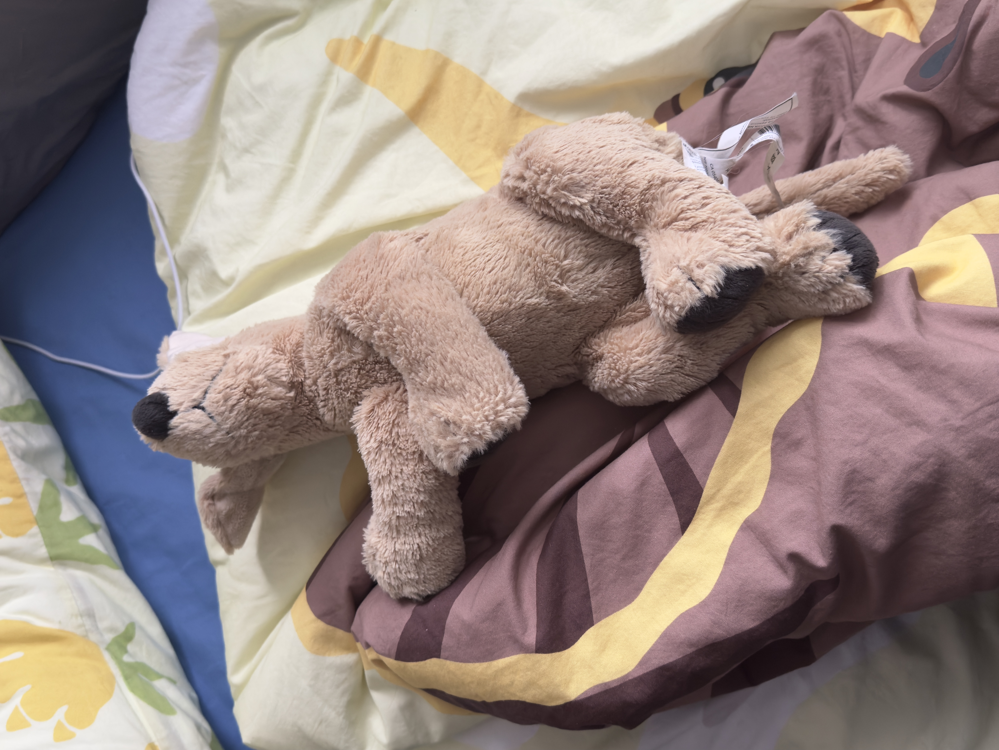
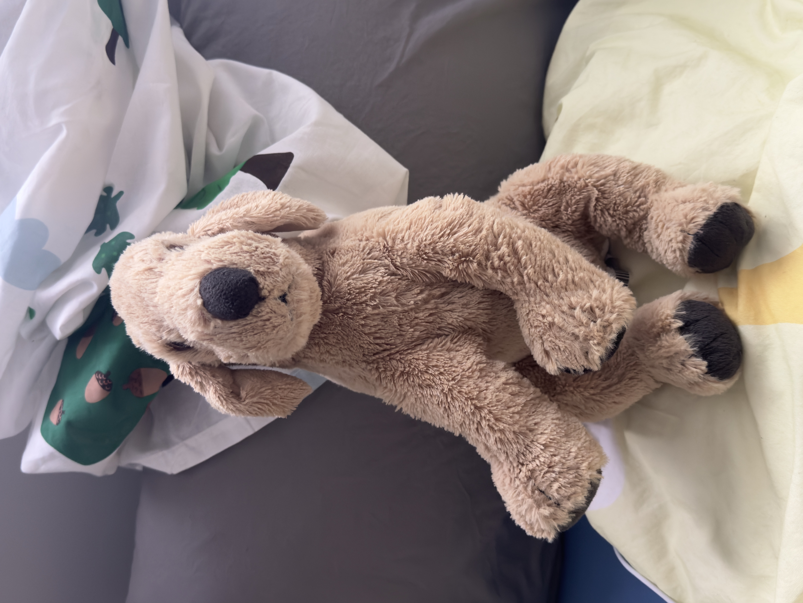

Xiaohuang/小黄



I will forever remember the summer when I graduated from highschool in Beijing and my parents drove from Taiyuan to take me back instead of taking the bullet train, so they could move my bags and packs of belonging without feeling exhausted. We don't have Ikea back in Taiyuan—the city has been planned to build one for several years yet not so many updates news. We three took the chance and dropped by Ikea before getting on the highway. Without ANY surprises, the car ended up packed with things from there, including a Xiaohuang I got.
(Extra fun thing was, 老郝, my dad, actually got himself a fluffy hand-size hedgedog, which helds a strawberry in hands and is no longer sold right now, at checkout. When you squeeze the belly, I remembered it also made sounds. I believe he grabbed it randomly at the checkout couter when talking on the phone, but who knows, maybe he just LOVE it. Later when my mum asked, he said I picked it up; when I said nope, he said maybe somebody put into our cart, and this was the sign that we should keep it..🙄 🤡 I mean, just admit that you are the one picked it up...)I brought Xiaohuang on the plane to the States for my undergrad (the third pic). I do remember that I took Xiaohuang back, but when I think about it I'm unsure...
I guess every Xiaohuang is always this flat, cause I always squeeze it when I normally sleep on the right side lol. Anyway, I'll give Xiaohuang a shower tonight, with all my dirty laundry~